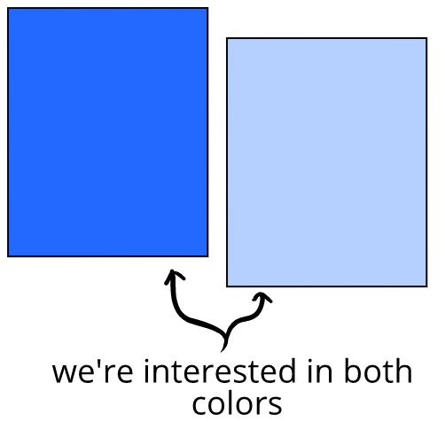

Owen watches an episode of Office People, where an outing to a sushi restaurant makes for a hilarious climactic scene. Everyone gets up to head to their coworker's wedding—but they realize their car keys were accidentally put into the jacket of a businessman! They have to scramble to recover them. It’s a really funny scene.
Next, Owen watches an episode of Animated Guy, where the climactic scene is a joust to the death among friends from the tops of limousines. Everyone dies horribly, and it’s really funny. Owen knows that whenever characters die in this show, they’re always back alive in the concluding scene.
Owen thinks both scenes were about equally funny. Which is weird, because they were so tonally different!

The tone of the show sets the overall OK. If Owen knows that characters can die and be alive again in the next scene, he has a large OK—which then needs a large mistake (limousine jousting) to balance the OK and generate humor.
On the other hand, if Owen relates to more realistic characters in a show with more realistic consequences, then Owen has a smaller OK—which are balanced by smaller mistakes (misplacing car keys) to produce intense humor.
This means both shows will have their own sweet spot that generates intense humor—even though these sweet spots are tonally different.
Artem is reading the opening paragraph of Soviet novel The Foundation Pit:
“On the day of the thirtieth anniversary of his private life, Voshchev was made redundant from the small machine factory where he obtained the means for his existence…”
Artem: *looks up* (thinking) “I can’t tell if this is hilarious absurdism or unrelievedly grim.”
The genre influences how we evaluate the size of the mistakes and OKs. If the front of the book said it was a dark comedy
("a masterpiece of dark humor"), we’d be more likely to evaluate the mistakes and OKs in a way that would generate some humor.
On the other hand, if the front of the book said it was a tragedy ("a masterpiece of human suffering"), we may evaluate things so that there was less humor.
When we’re not confident in how we’re “supposed” to be feeling, we can feel some evaluatory ambiguity. We may oscillate between a big OK and a small OK, which leads to bewilderment or mixed emotional states. (“I can’t tell if this is hilarious absurdism or unrelievedly grim.”)
In this book, we'll be as interested in learning about low-intensity humor as high-intensity humor. We can understand this by an analogy to a book about color.
A book that only focused on bright colors would just be a book about bright colors—not about colors generally. We'd probably first prefer grounding in using and understanding all colors:

Is a pale blue a "bad" form of blue that's less important? Not really—instead, we'd want to be able to think through color questions like:
- what makes blues different from each other? How do we describe them?
- when is a pale blue might be preferable to a sharper blue, and why?
- what makes colors work harmoniously together or not?
- why someone might chose the colors they did, and what does that mean about them or their goals?
(and so on)
Often, animated movies will use a very vivid blue for things like the sky. But when we actually take time to look at the sky in real life, it's usually a pale and thin blue:

So understanding pale blues ends up helping us understand the world around us—even more so than if we only focused on vivid blues.
Moreover, colors never exist on their own. They relate to each other in a way that creates the actual big picture we experience.
We may look at a picture of a field that feels vivid to be in—but that vivid experience is actually built from a lot of muted colors—including brown greens, pale blues, and scattered yellow:

This is sometimes not what we expect. At first, we might assume that very saturated colors would lead to more vivid experiences, every time. But when we stop to think about it, we know that's not really true—there's more going on.
Consider:
A book on color ideally would help us make sense of what we actually find evocative and not, when, and why that is.
That might be why a supersaturated blue sky in an animated movie is enjoyable, as well as why a pale blue sky in our lives can be exceedingly beautiful.
There's something similar about humor. Even though we tend to think of humor as a long belly laugh, when we actually start looking for humor in our lives, much of our humor is felt at a low-intensity.
Humor, like all emotions, is something that forms a big picture through combination of everything. The picture of the meadow above has just a bit of yellow in it, which makes a big difference—it's the same with humor, where just a bit makes a big difference.
This is obvious with color. The panels below aren't the same—just a bit of orange changes it into something different, even though both panels have a lot of blue in them:
It's the same for emotions. An emotional state that's just angry and an emotional state that's just mostly angry but with a bit of humor is not the same thing. In this case, the low-intensity humor in the emotional state is profoundly important:

Throughout this book, we'll be looking at humor at all intensities, and thinking about how it fits into life in all its different ways. That includes considering both high- and low-intensities of humor.